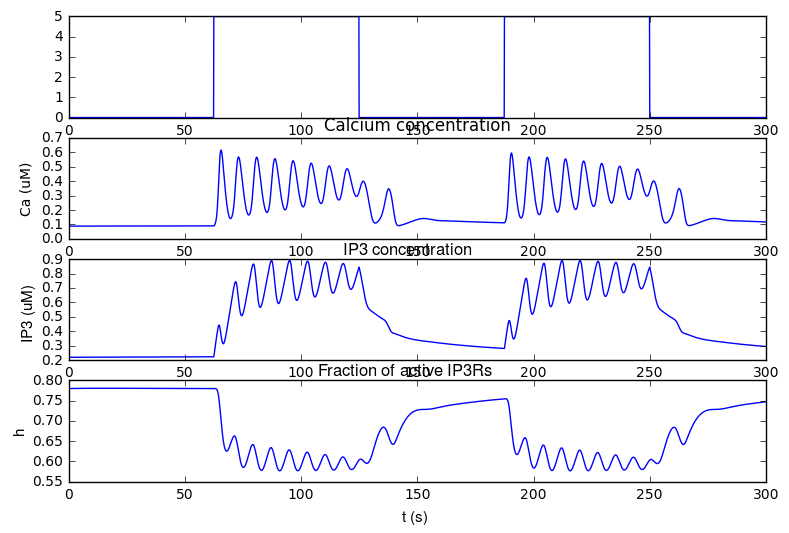

This is the readme for the model for the papers: 1 . De Pitta M, Goldberg M, Volman V, Berry H, Ben-Jacob E (2009) Glutamate regulation of calcium and IP3 oscillating and pulsating dynamics in astrocytes. J Biol Phys 35:383-411 doi: 10.1007/s10867-009-9155-y see also De Pitta M, Goldberg M, Volman V, Berry H, Ben-Jacob E (2010) Erratum to: Glutamate regulation of calcium and IP3 oscillating and pulsating dynamics in astrocytes J Biol Phys 36:221 doi: 10.1007/s10867-009-9182-8 2. Manninen T, Havela R, Linne ML (2017) Reproducibility and comparability of computational models for astrocyte calcium excitability Front. Neuroinform. This jupyter notebook was contributed by Dr T Manninen. To run, start jupyter notebook on your system and load the ipython notebook. The model code produces results of Figure 1 and Figures 3-5 in Manninen, Havela, Linne (2017). It also reproduces (the 2nd plot, Calcium concentration)  Figure 12a (AM) in the De Pitta et al. 2009 paper.